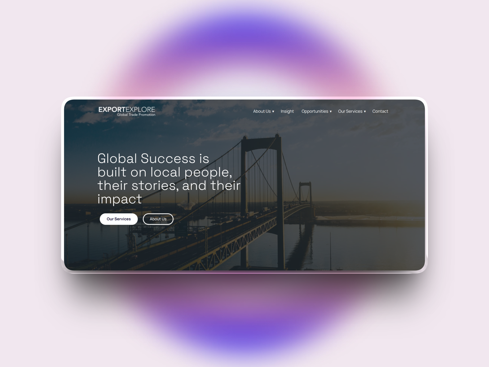
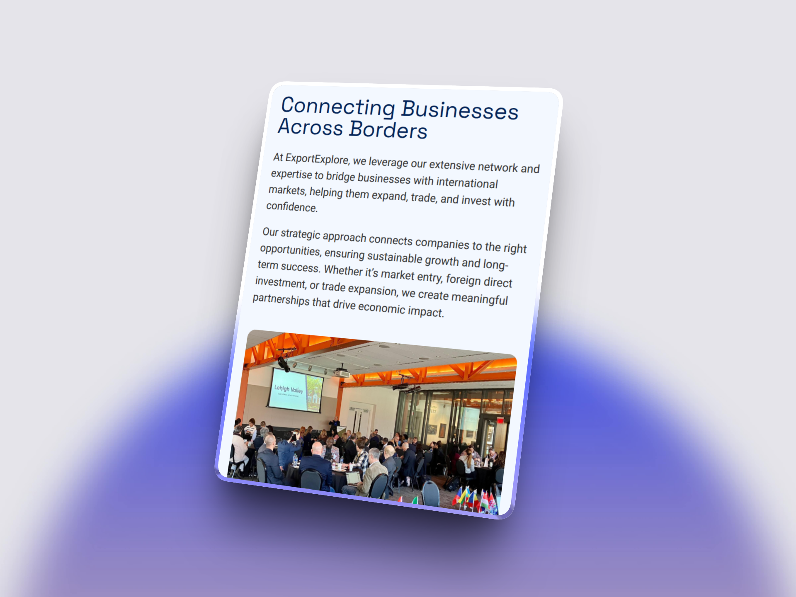
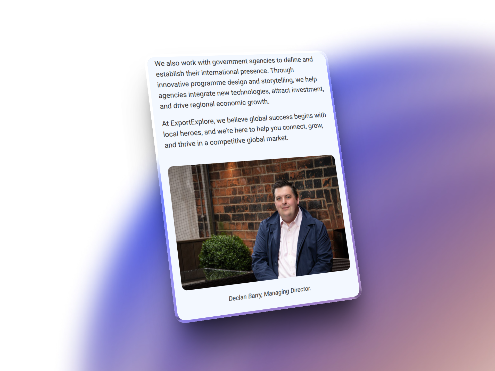

How we rebuilt an outdated website that was losing leads into a professional platform that reflects the scale and professionalism of the business.
ExportExplore came to us with a problem: their website no longer reflected the business they had become. As the company scaled and their services evolved, the outdated site was actively working against them.
They needed a complete fresh start — not just visual updates, but a rebuild that could grow with the business and accurately represent what ExportExplore had become.
We rebuilt ExportExplore's entire web presence from the ground up, working closely with their team to create a site that truly represents their expertise in international trade.
The goal was to give ExportExplore a platform that accurately represents their expertise while remaining easy for their team to manage and update.

The new site transformed how ExportExplore presents itself online, giving them a platform that matches their professionalism and expertise.
A modern, polished site that reflects the scale and sophistication of their international trade services.
Prospects now see the full scope of ExportExplore's capabilities, leading to better qualified conversations.
Elementor gives the team familiar, intuitive editing tools they're comfortable using.
Two years of ongoing support means the site stays secure, fast, and up to date while the business continues to grow.
The site is fully responsive, delivering a professional experience whether prospects are researching services on desktop or browsing on mobile.
Clean navigation and clear calls to action ensure visitors can easily find what they need and get in touch.


Today, ExportExplore has a website that properly represents their expertise in international trade — and a platform that will continue to grow alongside the business.
"Chris delivered exactly what we needed — a professional website that finally reflects the business we've built. The rebuild was smooth, and his ongoing support has been invaluable."
Let's talk about giving you a site that matches your professionalism.
Get Your Free Audit